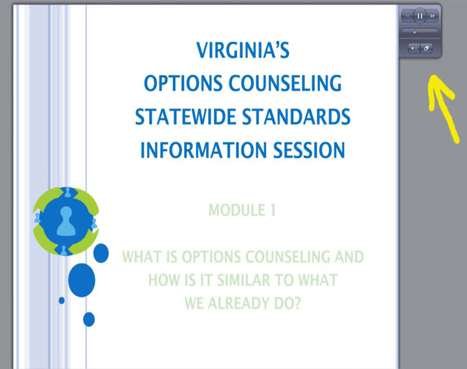
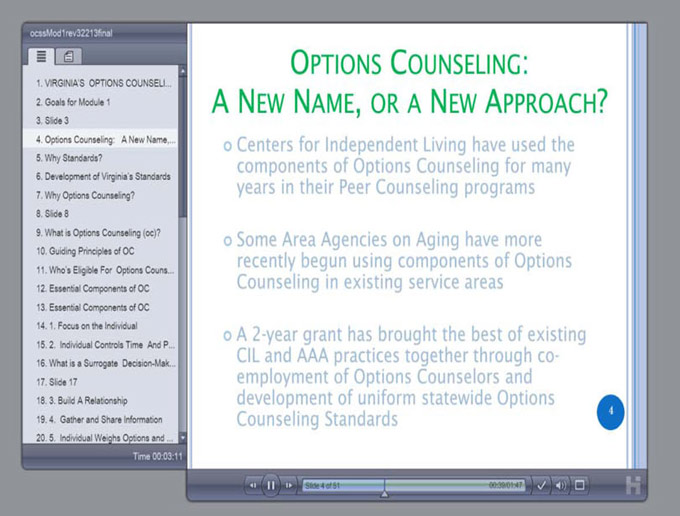
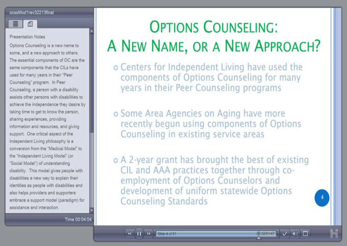

Frequently Asked Questions (FAQs)
For additional questions about the Options Counseling Statewide Standards, staff training, the certification process, or the implementation of Options Counseling in your agency, please call the Department for Aging and Rehabilitative Services at (804) 662-9333. For questions about this Options Counseling Webpage, posted materials, or post-quizzes, please email ppdtechhelp@vcu.edu. You will receive a response within 24-48 hours.
Print version of our Frequently Asked Questions
- Q. How do I start the presentation?
- A. Click on the Module you wish to take, and then click on “Narrated PowerPoint.” The presentation will begin automatically.
- Q. How do I view the slides in “full screen” mode and in “outline/notes” mode?
- A. Click on the double arrow icon to go between “full screen” mode and “outline/notes” mode. When you click “notes,” you can view the script as it is narrated. The “outline” mode displays the title or main topic of the slides (slides with “screen” shots do not show words in the outline mode) and lets you navigate forward and backwards through slides.
- Q. How do I stop the webinar if I need to take a break?
- A. To pause the Webinar, click on the double parallel bars. When you are ready to proceed, click on the forward (arrow) button.
- Q. How can I control the Module after it begins?
- A. Each screen in each Module appears with a control panel at the top right as shown below.

This control panel allows you to do the following:
- You can pause and restart the slide by clicking on the parallel bars in the top center of the control panel.
- You can go back and forth through slides by clicking on the arrows at the left (backwards) and right (forwards) at the top of the control panel.
- You can move backward or forward on the same slide by clicking at the appropriate place on the bar in the middle of the control panel.
- You can mute your audio by clicking on the speaker at the bottom left of the control panel. You can minimize the slide by clicking on the button on the bottom far right. When you minimize the screen, this is what you will see:
- The panel on the left allows you to move from slide to slide. If you click on the top right tab of this panel you can see the text that accompanies each slide as below:

- In minimized view, you can also use the controls at the bottom of the slide to pause and restart the Module, go back and forth between different slides in the Module, go back and forth on each slide, mute the audio, and maximize the slide.

- Q. Is there a certain browser I should use when I take the Modules?
- A. While the Modules are designed to work with any browser, Microsoft Explorer is most likely the best browser to use due to its features and interactivity with the automatic modules. If you experience difficulties using another browser, try switching to Microsoft Explorer.
- Q. What can I do if I have problems viewing the slideshow?
- A. Email ppdtechhelp@vcu.edu. Please provide specific details regarding the issue.
- Q. I want to view the Person‐Centered Practices slides at the end of Module 1. How do I do that?
- A. At the conclusion of Module 1, the person‐centered practices slides will continue to automatically appear. There is no narration for these slides.
- Q. I completed the Annual OC Refresher Training and Evaluation but did not receive a certificate?
- A. When completing the Annual Options Counseling Refresher Evaluation, all questions even the comment ones must be completed. The system only records the Refresher training as complete when all questions are answered.
- Q. Why do I need to take Options Counseling training?
- A. Options Counseling can be provided only in accordance with Virginia’s Statewide Options Counseling Standards, which contain these training requirements.
- Q. How do I get the appropriate training certification?
- A. After you complete each required Module (see below), you must take and pass a post‐quiz. When you have passed the post‐quizzes for all modules required for your role, you will be able to save your certificate as a pdf file and print it out.
- Q. What does the certification mean?
- A. The certification means only that you have completed the required training for your role. It does not certify that you meet any other qualifications contained in the Standards for your role at your agency.
- Q. How do I decide what Modules I need to complete?
- A. The basic requirements are summarized in the chart at the top of the webpage. The Modules you need to complete depend on both (1) whether you have had any prior Options Counseling training and (2) your role(s) in your agency’s Options Counseling program.
- If your role will be ONLY determining the need for Options Counseling, you need to complete and pass the post‐quizzes for Modules 1 and 2.
- If your role will be providing Options Counseling, you need to complete and pass the post‐ quizzes for Modules 1, 2, 3, 4 and the Annual Refresher Training and Evaluation.
- If your role is supervising Options Counselors, you need to complete Modules 1 and 5, pass the Module 1 post‐quiz, and certify that you completed Module 5.
- If you are the Executive Director of an agency that will offer Options Counseling, you need to complete Modules 1 and 5, pass the Module 1 post‐quiz, and certify that you completed Module 5.
- Q. Do I have to take the Modules in numerical order?
- A. No, however if you do not take them in order you will miss important information that you need to understand the material being presented. We strongly recommend that you begin with Module 1 and take the required modules for your role in the correct numerical order.
- Q. How do I register for the Modules I need?
- A. When taking a post quiz, if you have not previously registered, click on “First Time Users—New Registration.”
The next screen will then ask you to enter information about yourself. This is where you also create a user name and a password (which you can use each time you register to take a post‐quiz) and where you select your role (which determines the Modules you must complete in order to receive training certification).
If you are returning to the site after registering, simply enter your user name and password, and then click “Login.” You can access all posted resources and modules at any time without a login.
However, only your "username" and "password" will provide you access to the required post‐quizzes; enable the system to track your progress; and provide you with certification based upon your staff role.
Please note that your user name and password will permit you to sign into the site whenever you wish to complete module post‐quizzes.
- Q. What happens if I do not pass a post‐quiz?
- A. Prior to each post‐quiz, the system will tell you how many questions you need to answer correctly in order to pass the post‐quiz.
You have three chances to receive a passing score for each post‐quiz.
If you do NOT pass the post‐quiz after three tries, you will get the following message: Sorry! You have already attempted this post‐quiz 3 times.
You will need to email ppdtechhelp@vcu.edu requesting a reset for the number of attempts. Before doing so, we recommend a review of the module.
- Q. Who can I contact if I have additional questions?
- A. For questions about the Options Counseling Statewide Standards, staff training, or the implementation of Options Counseling in your agency, please call the Department of Aging and Rehabilitative Services at (804) 662‐9333.
For questions about this Options Counseling Webpage, posted materials, the certification process, or post‐quizzes, please email ppdtechhelp@vcu.edu.